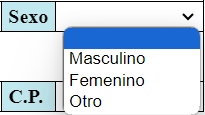
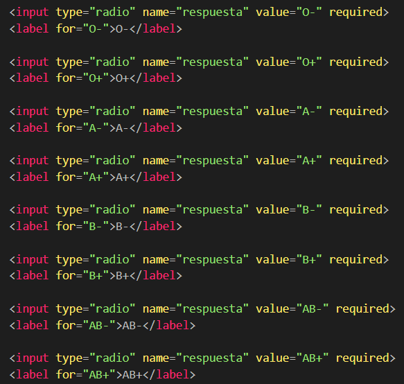
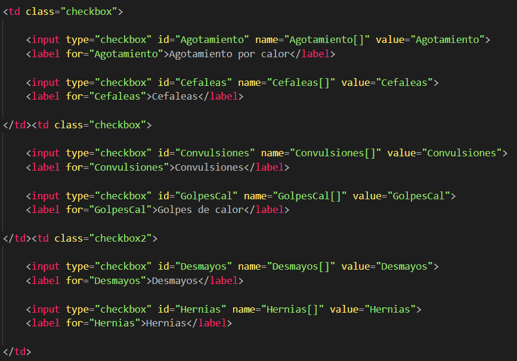
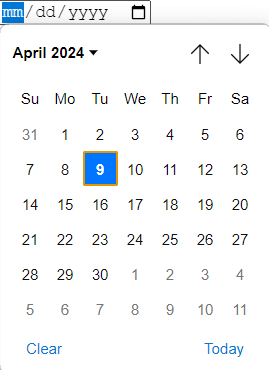
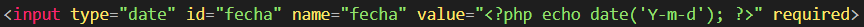

Formulario "Ficha Médica" con HTML y CSS
En esta sección podremos ver codigos de proyectos realizados de mi propia mano de diferentes lenguajes de programación y diferentes secciones de tecnología.
Empezaremos con un pequeño proyecto en donde se nos pide informatizar una ficha médica aplicando un diseño y distribución de elementos libres de tal manera que en mi caso se viera así:
Podemos observar como hay diferentes elementos que hacen que la ficha médica sea más práctica como elecciones de selección
única en el Grupo Sanguíneo, selección múltiple en problemas de salud o incluso en la formato para la elección de la fecha de realización.
Todo esto es gracias al conocimiento que se encuentra detras de la apariencia, podemos ver el código en HTML y la configuración de la apariencia en CSS:
Vamos a resumir aquellos elementos de interes como son:
-
Cuadros de ingresar datos: Observamos que tenemos cuadros en donde ingresamos los datos personales en cadena de texto como "Nombre" y "Apellidos"
y en caracter númerico como "Edad" para ello haremos uso de un
labelque suele estar asociado con uninput> (u otro elemento de control), esta asociciación se realiza mediante el atributoforen la etiquetalabel, que debe ser del mismo valor que el atributoiden la deinput.
La etiquetalabeles un pilar fundamental de cualquier formulario en el desarrollo web. Representa una etiqueta que le proporciona una descripción textual a un control de formulario, normalmente a través del texto encerrado dentro de la etiqueta.
Lo interesante de esta etiqueta es su capacidad para asociarse a otros elementos, específicamente ainput. Lograremos esto utilizando el atributofor, en nuestro caso:

Vemos que en
inputhemos añadido un par más de atributos:- type: define qué tipo de entrada de datos se espera (name, number, password...).
-
name: Indica como se llamara el
inputque definimos. - required placeholder: Podemos indicar un mensaje al usuario para darle un a "pista" sobre que debe introducir (placeholder) en el cuadro y que además sea obligatorio / requerido (required)
-
Elección de datos sobre cuadro desplegable: Esto se puede ver a la hora de seleccionar el sexo en este formulario en donde si accedemos al se desplegara un cuadro con varios opciones que el programador
haya definido para la elección.

Para lograr esto, asociaremosinputconselectde forma que tendremos que crear opciones de elección conoptione indicando su valor, en nuestro caso sería:

En este caso analizamos las etiquetasoption:- value: El contenido de este atributo representara el valor que será enviado al enviar el formulario si una determinada opción está seleccionada. En caso de que no se eliga ninguna se predefinira la opción por defecto indicandolo en su valor.
-
Selección única entre opciones: Esto se puede ver a la hora de seleccionar el Grupo Sanguíneo en este formulario en donde vemos que tenemos opciones para elgir, pero por lógica una persona solo puede pertenecer a un Grupo Sanguíneo
de ahí la utilización de selección única, aunque parece complicado haremos uso otra vez de
labeleinput

Para lograr esto, asociaremosinputconlabelde forma que tendremos que crear opciones de selección única de modo que solo podamos seleccionar una y no más, de esto dependera los atributos y su valor en el interior de las etiquetas, en nuestro caso el código sería:

En este caso, observamos comoinputira por encima delabelpero lo que definira que sea una elección sera el atributotypecuyo valor esradioindicando que es una elección y como cada una es requerida debido al atributorequiredquiere decir que uno de ellas es requerida todo ello indicando confora donde dirige la elección escogida. -
Selección múltiple entre opciones: Esto se puede ver a la hora de seleccionar los Probelmas de Salud en este formulario en donde vemos que tenemos opciones para elegir, por lógica una persona puede padecer más de un Problema de Salud
de ahí la utilización de selección múltiple, aunque parece complicado haremos uso otra vez de
labeleinputcomo anteriormente

Para lograr esto, asociaremosinputconlabelde forma que tendremos que crear opciones de selección múltiple de modo que solo podamos seleccionar cero o más, de esto dependera los atributos y su valor en el interior de las etiquetas, en nuestro caso el código sería:

En este caso por organización las elecciones la hemos organizado en una tabla dos a dos, de manera que se vea como hemos diseñado el formulario, lo que definira que estas opciones sean de selección múltiple sera el valor del atributotypeque escheckboxy como no esta obligado ni requerido el usuario es capaz de elegir o no las elecciones que él crea convenientes. -
Selección de fecha: Al inicio del formulario se encuentra una opción para indicar la fecha de registro del formulario de modo que el usuario la eliga según el día que lo rellene para darlo de alta, al acceder a él se nos presenta un calendario que según
el órden de los elementos fecha se presentaran de una forma u otra en este caso en orden europeo (día, mes, año) o pudiendo escribir la fecha manualmente en su orden correspondiente.

Para lograr esto unicamente haremos uso deinputpero todo se definira según el valor de los atributos de modo que el código es el siguiente:

En este caso lo que define el formato de la elección de fecha son el atributotypecuyo valor ser el dedatey el valor de atributovaluecuyo valor sera una sentencia indicando como será el valor de la fecha a elegir?php echo date('Y-m-d'); ?ademas de que para requerirla en el formulario haremmos uso del atributorequired.
input y label y sus atributos además de los valores que añadimos a los mismos, para poder generar un formulario interecativo, atractivo y sobre todo elegante y formal.